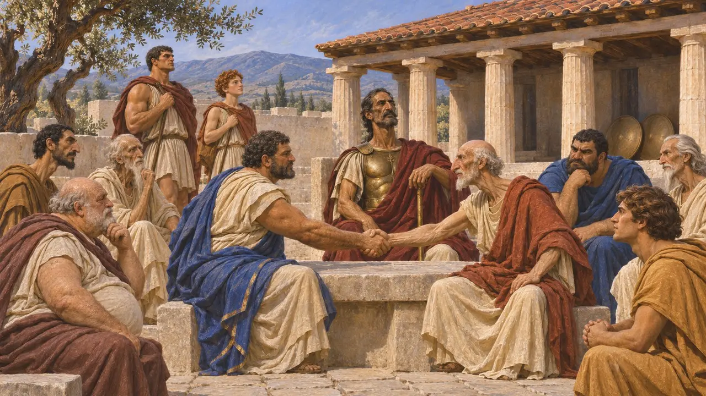
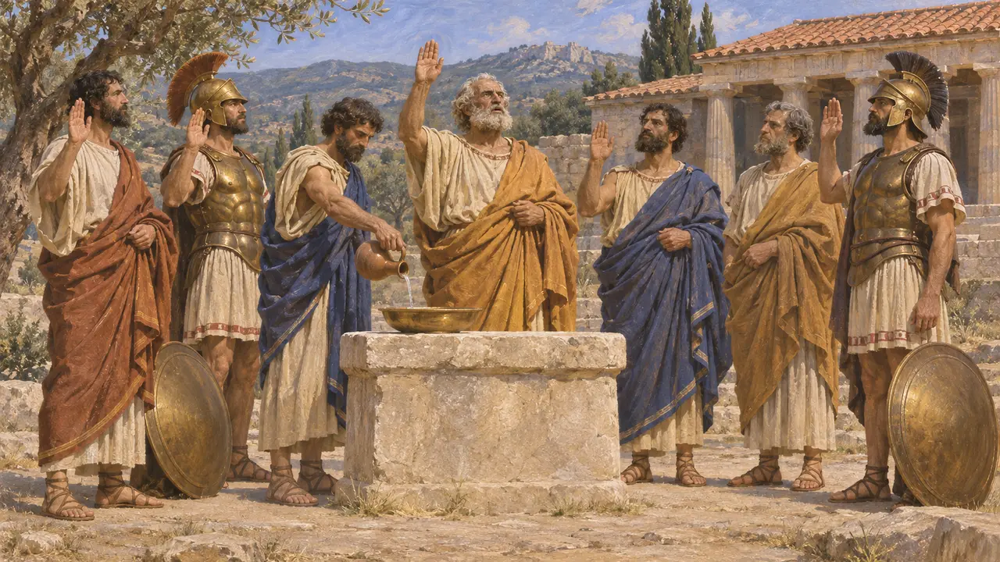
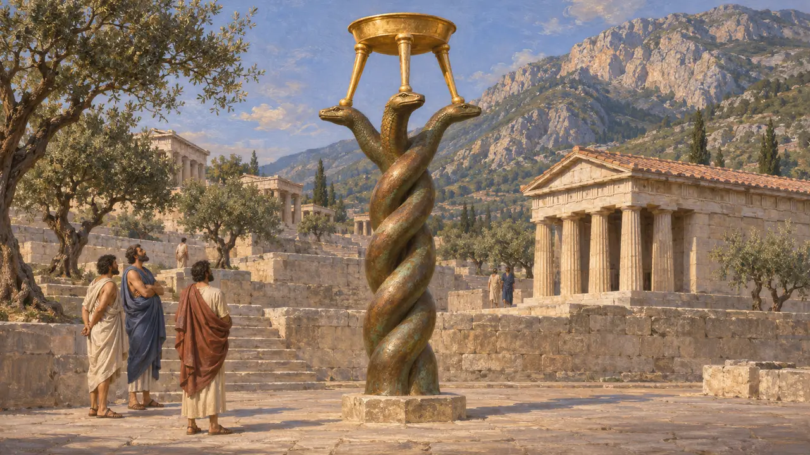
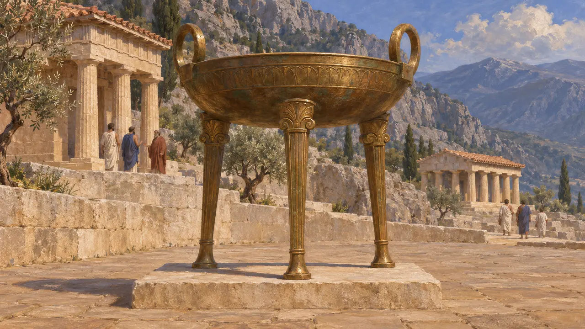

The Hellenic League
The Greek states sworn together against Xerxes, 481-479 BCE
In the game: Level 10: The Hot Gates, Level 11: The Finale
In 481 BCE the Greek states that meant to resist Xerxes met at the Isthmus of Corinth and swore an alliance under Spartan command. Modern historians call it the Hellenic League; the Greeks called themselves simply the Greeks. It fought at Thermopylae, Artemisium, Salamis, Plataea and Mycale, and most Greek states did not join it.
In the game: The Greeks of the Hellenic League are the foe at Plataea and on its fields, under their own emblem in the battle banner and beside their name.

The congress at the Isthmus
Ancient accountHerodotus says the Greeks who took the better side met in 481 BCE, ended their own wars, the bitterest between Athens and Aegina, and sent spies to Sardis and envoys to Argos, Syracuse, Corcyra and Crete. None of those four joined. Sparta led on land and sea, because the allies would not follow an Athenian.
Herodotus 7.145, 8.2-3

An oath against those who went over
Ancient accountHerodotus says the allies swore that every Greek state that gave itself to the Persian without being forced would pay a tithe of its wealth to the god at Delphi once the war was won. Thebes and most of Boeotia, Thessaly and others had already given earth and water.
Herodotus 7.132

The names on the Serpent Column
In the recordAfter Plataea the allies set up a gold tripod at Delphi on a bronze column of three twisted snakes. The column survives in Istanbul, inscribed with the names of 31 states 'who fought the war'. It is the only list from the time of the states that resisted.
R. Meiggs and D. Lewis, A Selection of Greek Historical Inscriptions, 1969, no. 27; Herodotus 9.81

The emblem beside its name
DisputedThe game marks the League with Apollo's bronze tripod of Delphi, the Greeks' shared sanctuary. The Serpent Column itself is not used, since it was made from the spoils of Plataea, after the battles the League fights in the game. The Greeks fought under their own city devices, not a League flag.
Herodotus 9.81; Thucydides 1.132
Sources
- Herodotus 7.132, 7.145, 8.2-3, 9.81
- Thucydides 1.18, 1.132
- R. Meiggs and D. Lewis, A Selection of Greek Historical Inscriptions, 1969, no. 27
- P. Green, The Greco-Persian Wars, 1996